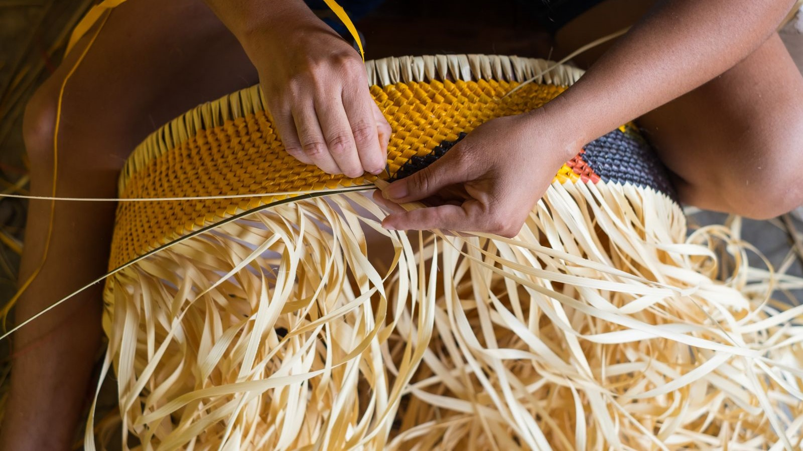

Bem vindo, {{usuario.nome}}
Logar-seConheça a AMAZÔNIA
A Amazônia é a nossa verdadeira casa! Isso vale pro mundo todo, já que lá a gente encontra a maior biodiversidade do planeta. Muito se fala sobre como preservar essa riqueza e não tem como a gente não lembrar das comunidades locais! Foi pensando nessas pessoas que criamos esse projeto, para promover o artesanato local a partir de produtos sustentáveis :)

Conheça o que vem da
AMAZÔNIA
Formada por artesãs da Comunidade São João de Ipecaçu, São Paulo, Vila Nova e Nova Canaã, a marca Teçume D’Amazônia confecciona cestas de fibras de cauaçu, uma erva que pode atingir até 5 metros de altura.

Conheça o que vem da
Conheça o que vem da
AMAZÔNIA
Além de lindo, esse trabalho ressignificou a relação dos artesãos com o cauaçu. Antes essa erva servia só pra fazer telhados de cozinhas e fornos de farinha. Hoje, ela vira produtos sustentáveis que, além de contribuírem para um mundo melhor, garantem a preservação da cultura.